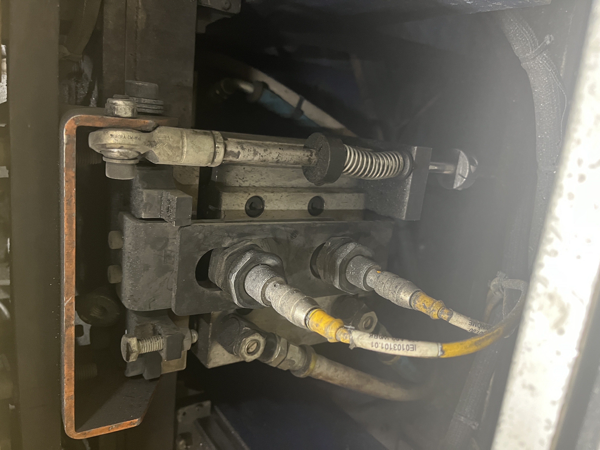
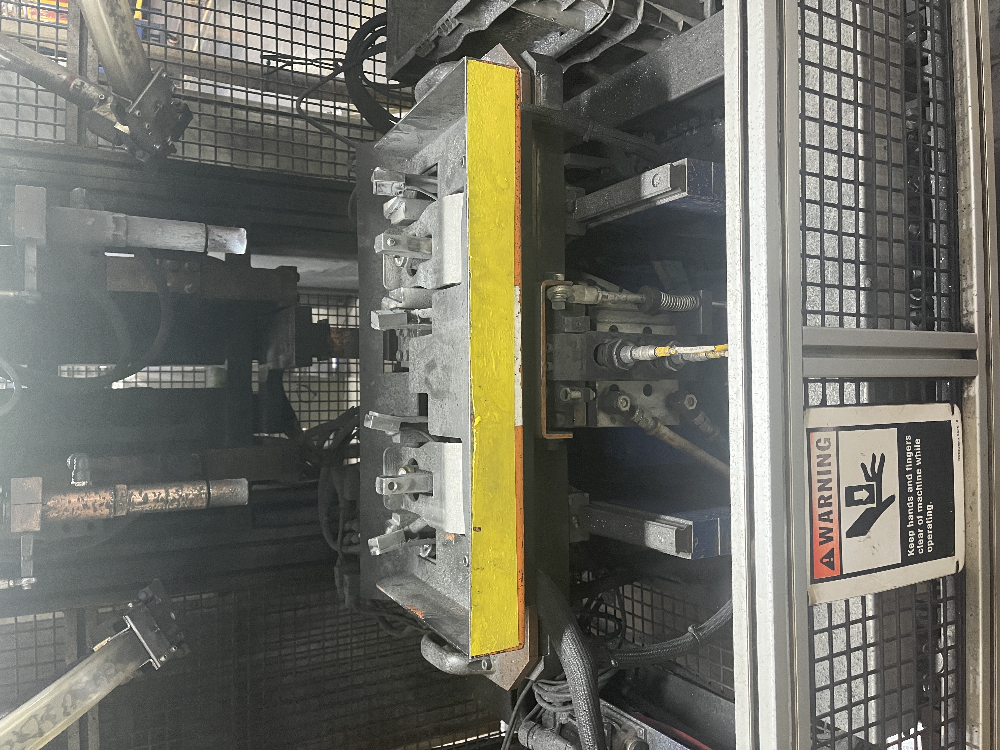
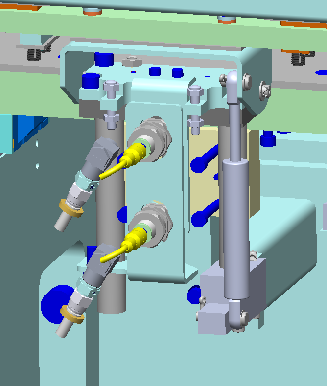

Martinrea International
Ejector Method Redesign
Redesigning a recurring production mechanism to improve reliability, protect equipment, and increase throughput.
Role
Manufacturing Engineering Intern
Focus
Mechanical Design · Reliability · Process Improvement
Tools
SOLIDWORKS · Pneumatics · Bearings · Mechanism Design
Project Overview
The production process used an ejector mechanism to move completed parts away from the welding equipment after each cycle. Repeated operation created reliability problems within the existing mechanism, contributing to equipment wear, electrode damage, and recurring production downtime.
I redesigned the mechanism to create a more stable and maintainable system while preserving the existing station architecture and pneumatic actuation.
01 The Existing Mechanism
Understanding how the original ejector operated and where reliability problems were developing.
The original system used a pneumatic cylinder to actuate a pivoting plate / ejector assembly. Springs and the existing pivot arrangement controlled or supported the motion of the mechanism.
Repeated cycling created instability and wear within the system. The mechanism was used across multiple substations, so those reliability problems affected production repeatedly rather than at a single isolated station.


02 Failure Modes
Recurring mechanical issues were reducing equipment reliability and interrupting production.
Instability
The existing mechanism could become unstable during repeated operation, affecting the consistency of the ejector motion.
Pivot Wear
Repeated motion at the pivot contributed to wear and reduced the robustness of the assembly.
Alignment & Hardware
The existing arrangement could loosen or become difficult to maintain and realign during service.
Electrode Protection
Uncontrolled or unstable movement could allow the tray / mechanism to impact the electrodes, contributing to damage and downtime.
03 Design Requirements
The redesign needed to improve reliability without requiring a complete station replacement.
Robustness
Reduce wear and instability during repeated production cycles.
Controlled Motion
Improve the behavior of the ejector throughout its movement.
Maintainability
Use mechanical interfaces that were easier to service and replace when required.
System Compatibility
Preserve compatibility with the existing station and pneumatic cylinder.
04 Mechanical Redesign
Improving the pivot system and controlling the motion of the ejector.
Bearing-Supported Pivot
The original pivot arrangement was redesigned using bearings and shoulder bolts to create a more robust rotational interface and reduce wear associated with repeated cycling.
Gas Strut Assist
A gas strut was incorporated to support the ejector motion, reduce the load carried by the pneumatic cylinder, and prevent the mechanism from moving uncontrollably into the electrodes.


Design completed during my internship; factory implementation followed afterward.
05 Results
45%
JPH Increase
Across 9 substations
Reduced Downtime
Eliminated unnecessary daily downtime associated with recurring ejector issues.
Equipment Protection
Improved control of the mechanism to reduce the risk of damage to the electrodes.
Improved Reliability
Created a more robust ejector design for repeated production use.
06 Engineering Takeaways
Design for Wear
Small mechanical interfaces can become major production constraints when they cycle continuously. Designing the pivot around repeated use was just as important as making the mechanism function initially.
Control the Dynamics
A mechanism that reaches the correct final position is not necessarily a good production design. How the system moves between positions also affects reliability and surrounding equipment.
Design for Maintenance
Production mechanisms eventually require service. Using robust, replaceable mechanical interfaces can reduce the impact of maintenance on manufacturing uptime.
Engineering Methods
SOLIDWORKS · Mechanism Design · Bearings · Pneumatics · Reliability · Root Cause · Production Equipment · Process Optimization